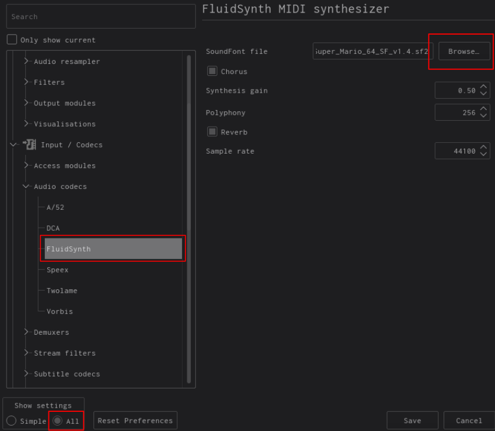

Making Super Mario 64 Remixes of Songs
2022-11-19
A while back, I discovered Super Mario 64 remixes of Aphex Twin and Radiohead tracks and thought they were the coolest thing ever. I tried my hand at making one and found that it's surprisingly easy to do using a simple yet effective technology: MIDI (Musical Instrument Digital Interface).
Here are some of my favourites that I've remixed:
2 of Amerikaz Most Wanted - 2Pac, Snoop Dogg
A Cruel Angel's Thesis - Yoko Takahashi

Beat It - Michael Jackson
Duvet - bôa
Everytime We Touch - Cascada

Feel Good Inc. - Gorillaz
Flim - Aphex Twin
Gerudo Valley - Koji Kondo
Reckoner - Radiohead
Waluigi Pinball - Kentaro Ishizaka
How It Works
MIDI is essentially a universal system that allows instruments to communicate with each other and computers. While MIDI encompasses much more, including programming and other musical standards, what's important for this case are the files. MIDI files (.mid) are not like typical .mp3 and .wav files because they don't actually hold any audio data. Instead, they're more like sheet music, containing instructions for an interpreter to play notes. MIDI files include data like the notes all the instruments are playing, dynamics (volume), and tempo (speed). They are standardized in some ways; for example, drums should always be on the 10th channel.
Another important component is soundfonts. When you play a MIDI file on your computer (assuming you have a media player that can play them), you'll hear the song normally. To add the Mario 64 instruments and sounds, you need to use a soundfont. Soundfonts contain the actual audio for instruments. Since MIDI is a standard, the instruments correspond to what the MIDI file requests.
How To Make Your Own Remixes
To actually render and play the MIDI files with the Mario 64 soundfont, I use VLC media player. The classic, legendary, FOSS audio program that can run anything.

By default I wasn't able to play MIDI files, so I had to install FluidSynth, which supports soundfonts.
On Debian/Ubuntu:
sudo apt-get install fluidsynth
Arch Linux:
pacman -S fluidsynth
Fedora:
sudo dnf install fluidsynth
Alternatively, you can visit the FluidSynth website to download.
You will need the Mario 64 soundfont as well. Click here to download it
Open VLC and go to Tools > Preferences (or Ctrl+P). Then, make sure "All" settings is enabled at the bottom left corner. Under Input / Codecs > Audio Codecs, click FluidSynth. Press "Browse", then select the Mario 64 soundfont. Be sure to save your changes.

Now, all you need to do is to play a .mid file and you're done!
Finding MIDI Files
I found most of mine on
https://www.hamienet.com/) (best in general)
https://www.vgmusic.com/ (best for games)
https://freemidi.org/ (everything)
https://www.midishrine.com/ (games and anime)
https://animezen.net/midis (anime)
Choosing a good MIDI file will make the song much better. MIDIs with lots of instruments tend to work best. Try a variety of artists and genres; the best ones are often instrumentals and dance music (IDM, EDM, etc.).
Rendering Files as mp3
If you want to send your files to other people without having them to go through this process, then I would recommend rendering them as an mp3 like I did above. You can do it easily with VLC once again.
Under Media, press Convert/Save (or Ctrl+R). Press + Add to add your file, click on Convert, and you can save your file as pretty much anything. Make sure you press the play button to actually render it.
Adjusting Soundfonts
If the soundfonts don't work well, use Swami to edit soundfont files. You can add/remove instruments, change channels, and more to make them work better with your MIDI files.
You Can Do More Than Mario 64
I've seen soundfonts for Undertale, Minecraft, DOOM, and more. The instruments for DOOM and Undertale are not nearly as unique as Minecraft or Mario so most of the MIDIs just sound normal.
In Conclusion...
The world of MIDI is fascinating. I love browsing MIDI file websites and seeing what talented people have created. This was how many people enjoyed their music when internet speeds were slow. MIDI files were also used in game consoles until the early 2000s, which is why an N64 game's soundfont is used for these remixes. Nowadays, games can be as large as they please (side note: why are games like COD: Warzone 200+ GB, it's absurd), so we don't see MIDI used as much for recreational remixing as before. I think there's a lot more potential with this technique, and I'm just scratching the surface of what can be done. Go on and make a MIDI remix!